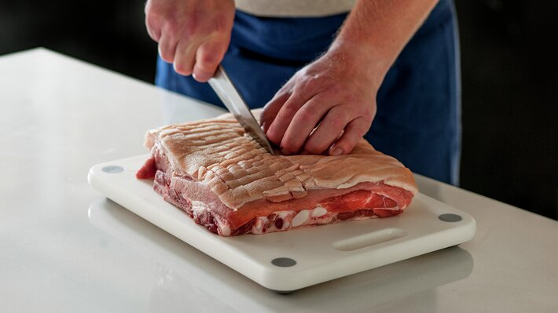
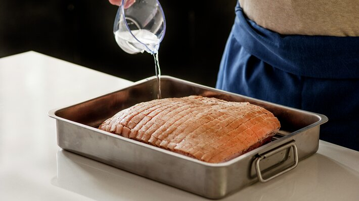
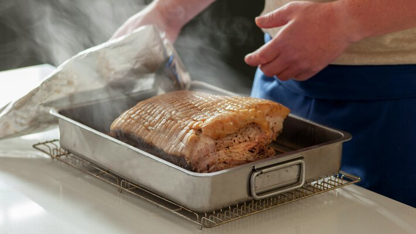
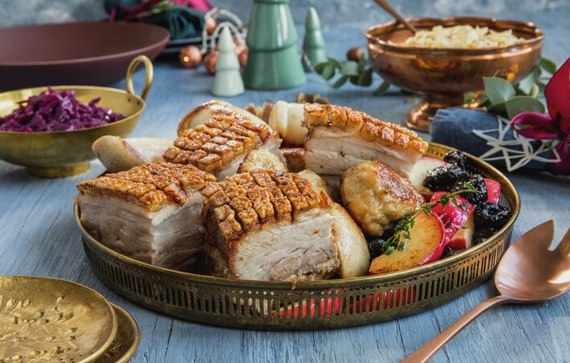

Oppskrift på Ribbe for Dummies
Hvor mye ribbe per person?
Vi beregner 300 g ribbe per person. Skal du servere ribbe med medisterkaker og julepølse kan du redusere
til 250 g per person. Vil du ha nok ribbe til at du også kan servere kald ribbe til
julefrokost/julelunsj, beregn ca. 450 g per porsjon. Har du rester av ribbe, kan du lage noe godt til
juletapas eller andre digge resteretter.

-
Skjær gjennom svoren og litt ned i spekket med en skarp, spiss kniv. Hvis du ruter opp parallelt med
ribbeina blir det lettere å skjære opp pene biter etter steking. Gni ribba godt inn med salt og pepper.
Masser gjerne saltblandingen godt ned i sprekkene i svoren. Pakk ribba inn i folie og la den stå i
kjøleskap i 2-3 dager.

- Legg ribba i langpanna med svoren opp. Legg en asjett opp ned under ribba, slik at den blir litt høyere
på midten (da renner det smeltede fettet av ribba). Det er viktig at ribba er noenlunde like høy på
begge sider for å få et jevnt og pent resultat. Du kan også bruke en ball av folie til å støtte opp
ribba. Hell på vann og dekk formen med aluminiumfolie. Pass på at folien ikke hviler mot ribba, da kan
den sette seg fast. Det er viktig at folien er helt tett for at dampingen skal bli vellykket.
- Forvarm ovnen til 230 °C. Sett langpanna midt i ovnen og damp i 45-60 minutter. Nå "blåser" ribba seg
litt opp og svoren spriker.

- Fjern folien og reduser temperaturen til 200 °C. Sett ribba tilbake midt i ovnen og stek videre i ca.
1-1 1/2 time. Fyll gjerne på litt vann i langpannen underveis. Uansett om ribba veier lite eller mye, er
steketiden like lang. Dette kommer av at tykkelsen er omtrent den samme om ribba er stor eller liten. La
ribba hvile i 20 minutter før du skjærer i den.
Ofte får ribba sprø svor av seg selv, hvis ikke kan du gjøre følgende mot slutten av steketiden:
Sett panna høyere i ovnen og øk temperaturen til 250 °C, eller bruk ovnens grill. Følg nøye med
så
du ikke brenner svoren, ikke forlat ovnen, for dette går raskt. Hvis bare deler av ribba har
fått
sprø svor, kan disse dekkes med aluminiumfolie, slik at de ikke blir brent.
- Saftig og god ribbe med sprø svor klar til servering. Tradisjonen tro blir dette ofte servert med surkål
eller rødkål, kokte poteter, svisker, epler, stekesjy eller saus og rørte tyttebær.

Bon Appétit!